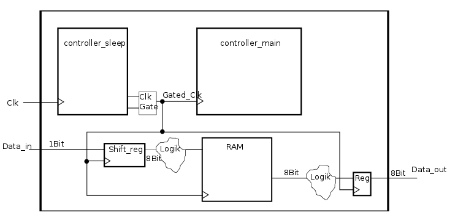
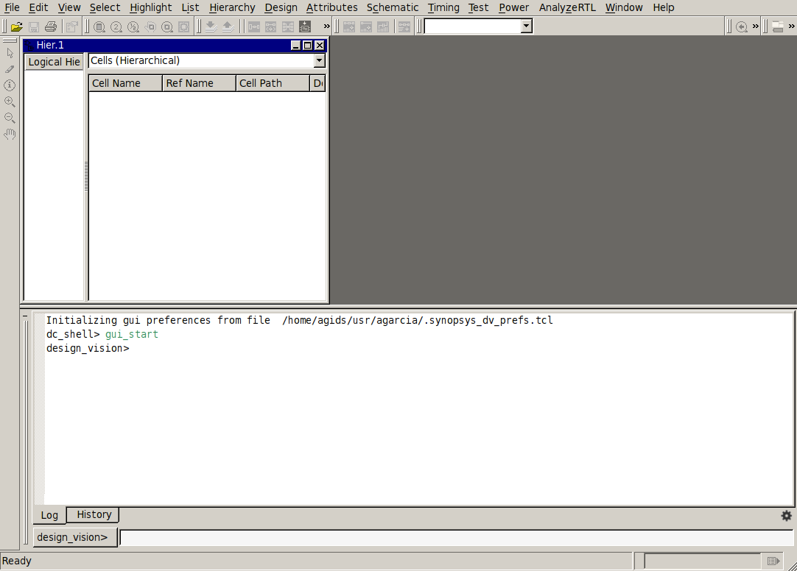
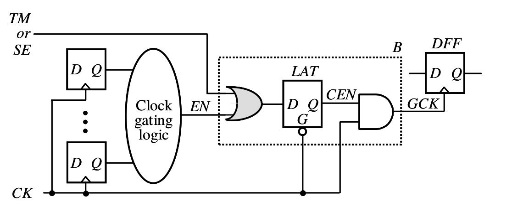
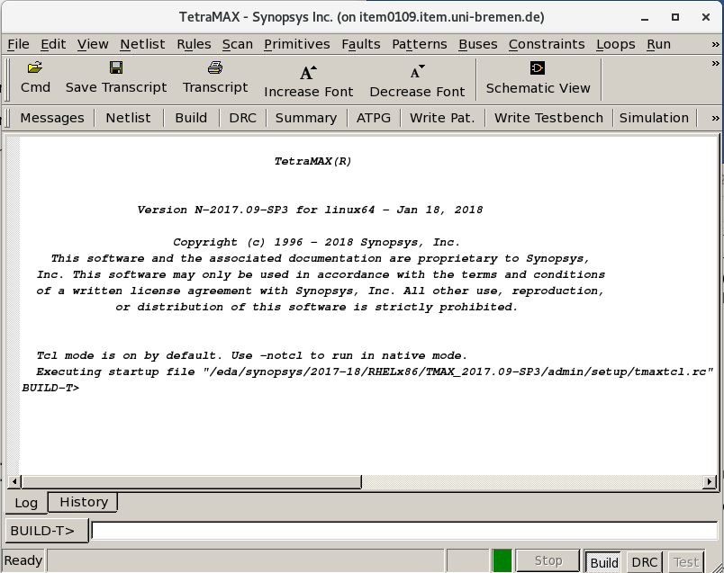
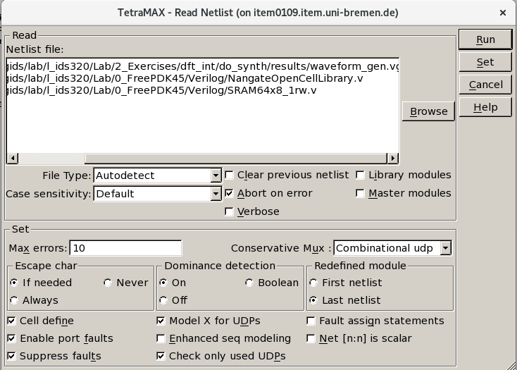
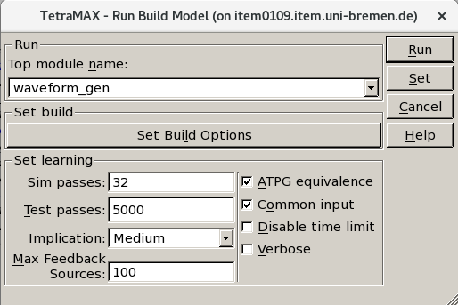
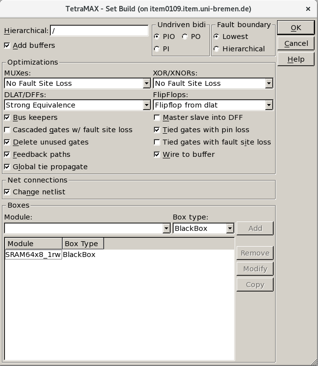
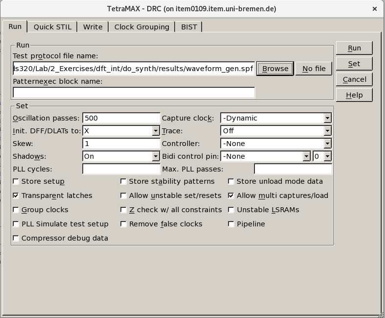

Tutorial IC Design
Table of Contents
1. Goals
This tutorial is the extension of the Basic DFT tutorial. The goals of this tutorial are as follows:
- Modify the design in order to deal with gated clocks and non-scan storage elements
- Integrate the scan architechture into the design
- Automatic Test Pattern Generation (ATPG)
In this tutorial, we use the waveform generator design.
2. Design the unit (RTL)
Before we start with DFT synthesis, the design must be modify by adding some scan input and output pins. In addition to that, we have to deal with different design styles such as gated clocks. The waveform generator design is illustrated bellow:

In the terminal, go to the directory dft_int/rtl and open a text editor to open
waveform genarator top design waveform_gen.vhd.
In the terminal execute:
cd dft_int/rtl
and then,
emacs waveform_gen.vhd &
To integrate the scan chain into the design, first, add the interfaces which is needed for design. We define SERIAL_IN, TESTMODE and SCAN_EN as input ports of form std_logic and SERIAL_OUT as output port of the std_logic. In addition to that, due to the unknown state of memory it should be bypassed. Therefore, the top vhdl code should be extended to bypass the memory. Finally, you should have such a vhdl code of your top design waveform_gen which is modified for scan integration:
library IEEE;
use ieee.std_logic_1164.all;
use ieee.numeric_std.all;
use work.parameter.all;
entity waveform_gen is
port(
clk,rst,start,mode,data_in : in std_logic;
sync_rst_ram_addr : in std_logic;
period_multiplier:in std_logic_vector(counter_sleep_width-1 downto 0);
data_out: out std_logic_vector(bit_width_data-1 downto 0);
sleep_reg: out std_logic_vector(counter_sleep_width-1 downto 0);
---------------------------------------------------------------------------
SERIAL_IN, SCAN_EN, TESTMODE: in std_logic; -- Modified for TST
SERIAL_OUT: out std_logic
);
end entity;
architecture behaviour of waveform_gen is
signal gated_clk,sleep_inv: std_logic;
signal gated_clk2,sleep2_inv: std_logic;
signal re_ram,we_ram,oe_ram,enable_reg_file,sleep,sleep2,enable_shift_reg: std_logic;
signal addr_ram: std_logic_vector(size_ram_addr-1 downto 0);
signal data_shift_reg,ram_out,ram_out_dft:std_logic_vector(bit_width_data-1 downto 0);
-----------------------------------------------------------------------------
signal RAMBO, RAMBO_out : std_logic_vector(bit_width_data-1 downto 0); -- Modified for TST
signal intEnRAM : std_logic;
begin
sleep_inv <= not sleep;
sleep2_inv <= not sleep2;
clk_gate1:CLKGATE_X1
port map(
CK => clk,
E => sleep_inv,
GCK => gated_clk
);
clk_gate2:CLKGATE_X1
port map(
CK => clk,
E => sleep2_inv,
GCK => gated_clk2
);
controller_main:fsm
port map(
clk=> gated_clk,
rst=>rst,
start=>start,
mode=>mode,
re_ram=>re_ram,
we_ram=>we_ram,
oe_ram=>oe_ram,
enable_shift_reg => enable_shift_reg
);
controller_sleep0:controller_sleep
port map(
clk=>clk,
rst=>rst,
re_ram => re_ram,
we_ram => we_ram,
addr_ram => addr_ram,
sync_rst_ram_counter=> sync_rst_ram_addr,
sleep_time=>period_multiplier,
sleep=>sleep,
sleep2=> sleep2,
enable_reg_file => enable_reg_file,
sleep_reg => sleep_reg
);
shift_reg_data_in:shift_reg
port map(
clk=>gated_clk,
rst=>rst,
data_in=>data_in,
ena=>enable_shift_reg,
data_out=>data_shift_reg
);
ram_block:SRAM64x8_1rw
port map(
CE=>gated_clk,
WEB=>we_ram,
REB=>re_ram,
OEB=>intEnRAM, -- Modified for TST
A=>addr_ram,
I=> data_shift_reg,
O=> ram_out
);
output_register:reg_file
port map(
clk=>gated_clk2,
rst => rst,
ena => enable_reg_file,
data_in => RAMBO_out, -- Modified for TST
data_out => data_out
);
-----------------------------------------------------------------------------
-- Added for TST
-----------------------------------------------------------------------------
xor_reg:process(clk,rst) is
begin
if rst='0' then
RAMBO <= (others => '0');
elsif clk='1' and clk'event then
RAMBO <= ((addr_ram & we_ram & re_ram) xor data_shift_reg);
end if;
end process xor_reg;
mux2:process(RAMBO ,ram_out, TESTMODE) is
begin
if TESTMODE='1' then
RAMBO_out <= RAMBO;
else
RAMBO_out <= ram_out;
end if;
end process mux2;
mux1:process(oe_ram, TESTMODE) is
begin
if TESTMODE='1' then
intEnRAM <= '0';
else
intEnRAM <= oe_ram;
end if;
end process mux1;
end architecture;
3. Lunch design compiler
For this lab you are going to use the Design Compiler tool as well Tetramax from Synopsys In the terminal, go to the directory dft_int/do_synth.
for using the Design Compiler create a sourceme.sh file to do the setup.
export SNPSLMD_LICENSE_FILE=28231@item0096
export PATH=/usrf01/prog/synopsys/syn/R-2020.09-SP4/bin:${PATH}
Now you can source that file.
source sourceme.sh
Before you open the synthesis tool, it is practical to select the library of
standard cells that you use and to instruct the tool to save the log
files into the directories that you have previously defined. You can
do that creating a .synopsys_dc.setup file. Run emacs .synopsys_dc.setup.
First, you can add the following commands to your .synopsys_dc.setup
file; they instruct the tool to use your directories.
define_design_lib work -path ./tool/work set_app_var view_log_file ./log/synth_view.log set_app_var sh_command_log_file ./log/synth_sh.log set_app_var filename_log_file ./log/synth_file.log set_app_var search_path [concat ./cmd/ [get_app_var search_path] ]
And afterwards you can write the command to define the library to use.
set library_path "../../../0_FreePDK45/LIB/"
set library_name "NangateOpenCellLibrary_typical_ccs_scan.db"
set library_name2 "SRAM64x8_1rw.db"
set_app_var target_library $library_name
set_app_var link_library [concat $library_name $library_name2 dw_foundation.sldb "*"]
set_app_var search_path [concat $library_path [get_app_var search_path] ]
set_app_var synthetic_library [list dw_foundation.sldb]
set_app_var symbol_library [list class.sdb]
set_app_var vhdlout_use_packages { ieee.std_logic_1164.all NangateOpenCellLibrary.Components.all }
set_app_var vhdlout_write_components FALSE
Save your file. Now you can start the tool. Launch design_vision in the terminal. To
save the log in a directory, you can add a linux pipe
tee log/synthesis.log that redirects the log output to a file called log/synthesis.log.
design_vision | tee log/synthesis.log &

4. DFT configuration and synthesis
4.1. Design import
For the more complex designs, we usually write tcl commands in a separate file and source the files to set different options in the tool. Source config_synthesis tcl file to define all names and variable as well as list of vhdl files. Then, use you can read the RTL codes using read_design.tcl.
source ./cmd/config_synth.tcl source ./cmd/read_design.tcl
You can now set simple synthesis constraints using global_constraints.tcl file.
source ./cmd/global_constraints.tcl
The tool reads and "understands" the code. In the log file you can see the elements that it has inferred.
Have a look at the tcl files and make sure that you undestand all commands.
4.2. First DFT Synthesis
Now, we are going to configure the DFT. There are many options which should be set to configure the DFT. Among all options, we set the clock, test period, type of scan cells, the reset, scan input and output, scan enable and test mode. There are three widly used scan cells, Muxed-D Scan Cell, Clocked Scan Cell and LSSD Scan Cell. we use Muxed-D scan cells.
set_scan_configuration -style multiplexed_flip_flop
set test_default_period 100
set_dft_signal -view existing_dft -type ScanClock -timing {45 55} -port clk
set_dft_signal -view existing_dft -type Reset -active_state 0 -port rst
set_dft_signal -view spec -type ScanDataIn -port SERIAL_IN
set_dft_signal -view spec -type ScanDataOut -port SERIAL_OUT
set_dft_signal -view spec -type ScanEnable -port SCAN_EN -active_state 1
set_dft_signal -view existing_dft -type Constant -port TESTMODE -active_state 1
create_test_protocol
You can copy the commands into a file to automatize your synthesis process. Create a file using emacs cmd/dft_config.tcl and copy the
commands in it. Now you can begin the DFT synthesis. Execute the following commands:
compile -scan
Using this command, we do the compilation using scan option. Tool is replacing all the sequential elements by scan equivalent.
You can search the design for DFT violations using the following command:
dft_drc
After that you can specify the scan chain. You can select the number and length of the scan chains. We define only one scan chain for this design. In addition, we define that no different clock edges may occur in the scan chain. The input and output of the scan chain is also specified.
set_scan_configuration -chain_count 1 set_scan_configuration -clock_mixing no_mix set_scan_path chain1 -scan_data_in SERIAL_IN -scan_data_out SERIAL_OUT
Then, the scan chain can be inserted into the design. In addition, the command
set_scan_state_scan_existing indicates that the scan chain is fully implemented or not.
insert_dft set_scan_state scan_existing
Check the schematic of your design. The scan chain inserted in the design.
report_scan_path -view existing_dft -chain all > reports/chain1.rep report_scan_path -view existing_dft -cell all > reports/cell1.rep
4.3. Second DFT Synthesis
As you may have already noticed, your design contains gated clocks. To increase the testability of the design, the Further modificaiton of the design is necessary. In this step, replace the gated clock architecture with its test equivallent architecture as follows:
clk_gate1:CLKGATETST_X1 -- TEST CLOCK GATE
port map(
CK => clk,
E => sleep_inv,
GCK => gated_clk,
SE => TESTMODE
);
clk_gate2:CLKGATETST_X1 -- TEST CLOCK GATE
port map(
CK => clk,
E => sleep2_inv,
GCK => gated_clk2,
SE => TESTMODE
);
This standard cell uses an extra OR gate. This gate is used to force CEN to 1 using either the TM or SE signals.

Redo all configurations once more again for the modified rtl. Use the dft_config.tcl file that you
have created before, and configure the DFT.
source ./cmd/dft_config.tcl
Now you can begin the DFT synthesis. Execute the following commands:
compile -scan dft_drc
When the result of the drc is satisfactory, then you can specify the scan chain and insert the dft as follows:
set_scan_configuration -chain_count 1 set_scan_configuration -clock_mixing no_mix set_scan_path chain1 -scan_data_in SERIAL_IN -scan_data_out SERIAL_OUT insert_dft set_scan_state scan_existing
report_scan_path -view existing_dft -chain all > reports/chain.rep report_scan_path -view existing_dft -cell all > reports/cell.rep
After top-level scan insertion, we need different files for test pattern generation with TetraMax from synopsys. Write out the test protocol file in Standard Test Interface Language (STIL) format (the only supported format) and write out a Verilog or VHDL top-level netlist for the top-level design. For example, use the following tcl commands to save the necessary files as follows:
change_names -hierarchy -rule verilog write -format verilog -hierarchy -out results/waveform_gen.vg write -format ddc -hierarchy -output results/waveform_gen.ddc write_scan_def -output results/waveform_gen.def set test_stil_netlist_format verilog write_test_protocol -output results/waveform_gen.stil
Using the above commands, we write a gate level netlist .vg. set test_stil_netlist_format verilog command
identifies the netlist format that you are exporting to TetraMAX ATPG. We also write out the test protocol file using the
write_test_protocol command. Now, use remove_design command the remove the design.
5. ATPG
5.1. Lunch TetraMAX
In this part, we want to use the TetraMax from synopsys to create the test patterns.
Redirect to the tetramex folder cd dft/tetramx and start the software by using the following
command:
export PATH="/usrf01/prog/synopsys/txs/R-2020.09-SP4/bin:${PATH}"
tmax

5.2. Read the netlist and library files
In this step, we read the gate level netlist of the design as well as the library definition
of each cell in verilog format. Browse the netlists and add the verilog netlist of the design from
the dft/do_synth/results directory. Moreover, add the nangate library in verilog format in
0_FreePDK45/Verilog/NangateOpenCellLibrary.v directory.

5.3. Build the design
The Run Build Model dialog box sets the relevant parameters and builds the in-memory simulation model from the design modules that have been read in. TetraMAX ATPG performs a learning process, which you can control with this dialog. If a simulation model already exists, it is automatically deleted before the new model is built. Select the Build from the menu bar and select your top design. We use default options of Set learning box.

After selecting the top module, select Set Build Options and add SRAM as black box.

5.4. DRC check
Now, we perform design rule checking (DRC). First, specifie the name of the STIL procedures
file that defines the scan chains and test procedures, then click on Run.

5.5. Generate the test pattern
After you have imported the design and completed the DRC check without error, you can use TetraMax to create the test patterns. First, the errors should be annotated. In our case, we would like to check all stuck-at errors. Use the following two commands to annotate the errors and generate the test patterns:
add_faults -all run_atpg -auto
ATPG performed for stuck fault model using internal pattern source.
----------------------------------------------------------
#patterns #faults #ATPG faults test process
stored detect/active red/au/abort coverage CPU time
--------- ------------- ------------ -------- --------
Begin deterministic ATPG: #uncollapsed_faults=1420, abort_limit=10...
32 1401 14 2/3/0 92.23% 0.03
37 6 0 3/9/0 92.58% 0.03
Uncollapsed Stuck Fault Summary Report
-----------------------------------------------
fault class code #faults
------------------------------ ---- ---------
Detected DT 1837
Possibly detected PT 7
Undetectable UD 50
ATPG untestable AU 144
Not detected ND 0
-----------------------------------------------
total faults 2038
test coverage 92.58%
-----------------------------------------------
Pattern Summary Report
-----------------------------------------------
#internal patterns 37
#basic_scan patterns 37
-----------------------------------------------
CPU Usage Summary Report
-----------------------------------------------
Total CPU time 0.03
-----------------------------------------------
Finally, we write the generated pattern in binary format using the following tcl command:
write_patterns waveform_gen_pattern.v -internal -format binary